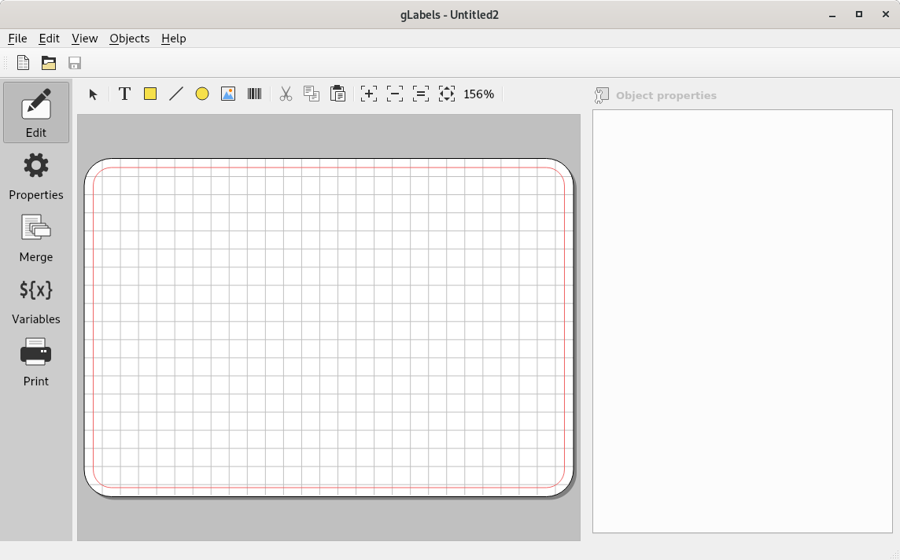
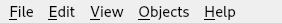
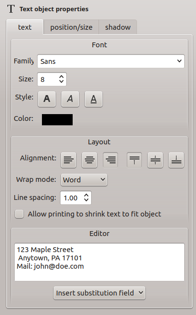

User Interface Overview
After opening gLabels as described in Starting gLabels and open a project, (see also Opening an Existing gLabels Project) the main window looks as follows:

Menu bar
On top of the window, you see a menubar where you can choose from all actions gLabels offers. Depending on the desktop configuration, the menubar can be outside the main window (especially on macOS, or when you use the global menu feature in some desktop environments).
Currently, the menubar looks as follows:

The menu bar has the following entries:
File menu
New – Opens a new project.
Open – Opens a file chooser dialog to open an existing .glabels project file.
Open Recent – When hovering the mouse pointer on it, a choice of recently saved projects will be presented.
Save and Save As… – Save a file or save it under a new name, respectively.
Properties – Switches to the Properties panel.
Merge – Switches to the Merge panel.
Variables – Switches to the Variables panel.
Print – Switches to the Print panel.
Product Template Designer – Opens the Product Template Designer assistant.
Close – Closes the current window.
Exit – Exits from gLabels, closes all open projects.
Edit menu
Undo and Redo – Undoes the last edit or repeats a reversed operation.
Cut, Copy, Paste, Delete – In case of an object is focused in the drawing area, you can do the named actions.
Select All – Selects all objects.
Un-select all – Un-selects all objects.
View menu
Toolbars – Changes the visibility of the Quick Access and Editor toolbars.
Grid – Shows a grid on the template which helps when aligning objects.
Markup – Shows a red markup line around the template. The area outside this line shouldn’t be treated as printable. However, for example, to get a “borderless” label or card, you can try to draw here. Just test the result in a print preview.
Zoom In, Zoom Out, Zoom 1:1, Zoom to Fit – Resizes the view as said.
Objects menu
Select Mode – Activates the Select Mode.
Create – When hovering the mouse pointer on it, you can open the respective drawing tools from the submenu.
Order – With the submenu entries Bring To Front and Send To Back you can move the focused object into the respective layer. Helpful when objects overlap each other, but in a wrong way (for example, when the background color has unintentionally come to the foreground and is obscuring all other objects.
Rotate/Flip – With the respective submenu entries, you can rotate an object in 90 degree steps left or right, or flipping (mirroring) horizontally or vertically.
Alignment – TBD.
Center – Centers an object horizontally or vertically. Centering always means in relation to the template, not to any of the other (underlying) objects.
Help menu
User Manual – Opens this user manual.
Report Bug – Shows some instructions about how to report a bug, including a button to open the issue tracker at Github directly in your browser, and a template what you can use for the bug report (with a button for copying the template contents conveniently).
About – Shows some information about the gLabels project itself.
For all menu items that can also be accessed via a keyboard shortcut, this shortcut is displayed next to the respective menu item.
Sidebar
At the left, there is a sidebar which lets you switch between modes. The initially active Edit mode is the normal one, where you see the template and can add or edit objects. In the Properties mode, you can view and change the properties of the template you are using. In the Merge mode, you can perform a document merge (see Performing a Document Merge). In the Variables mode, you can add, edit or delete user defined variables (see Creating User-Defined Variables). And last but not least, the Print mode shows some special settings for preparing to print the project (see Printing Your gLabels Project). The sidebar is always visible; it cannot be hidden.
On top of the window, under the menubar, you see a toolbar with three buttons. You can here create a new project, open an existing one or save it. By clicking on the toolbar using the right mouse button, a small context menu named Quick Access Toolbar appears. To hide the toolbar, disable the checkbox. Alternatively, choose View ➡ Toolbars ➡ Quick Access and enable or disable the checkbox.
On top of the editor viewport, you have another toolbar with entries for editing the layout. To hide the editor toolbar, choose View ➡ Toolbars ➡ Editor and enable or disable the checkbox.
If you are not happy with the placement of the toolbar: Click on the rasterized area left of the icons in the toolbar. Hold the mouse button pressed, and you can move the whole toolbar to another place in the window, for example, to the bottom.
At the right side, you find some settings which are only visible in Edit mode. For example, while a text object is focused:

Use the buttons and input fields to change the properties.